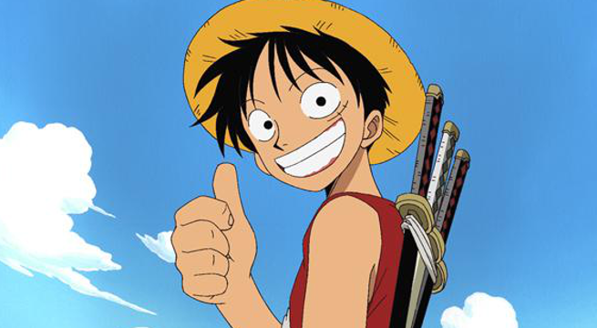
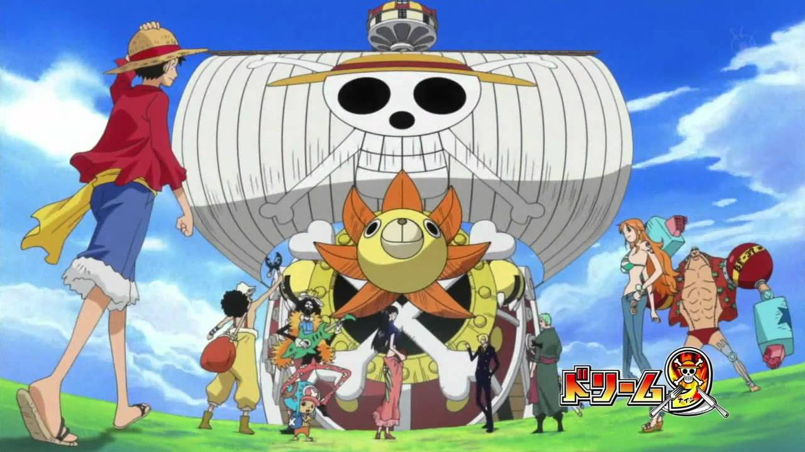
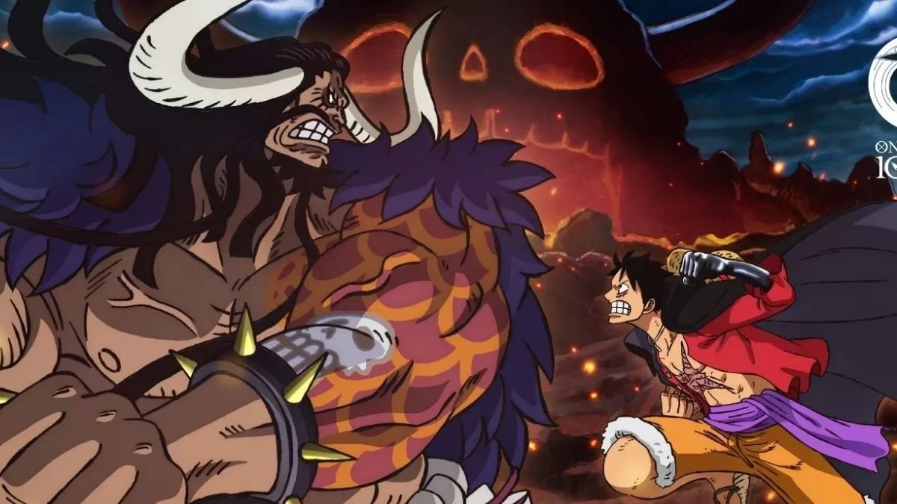
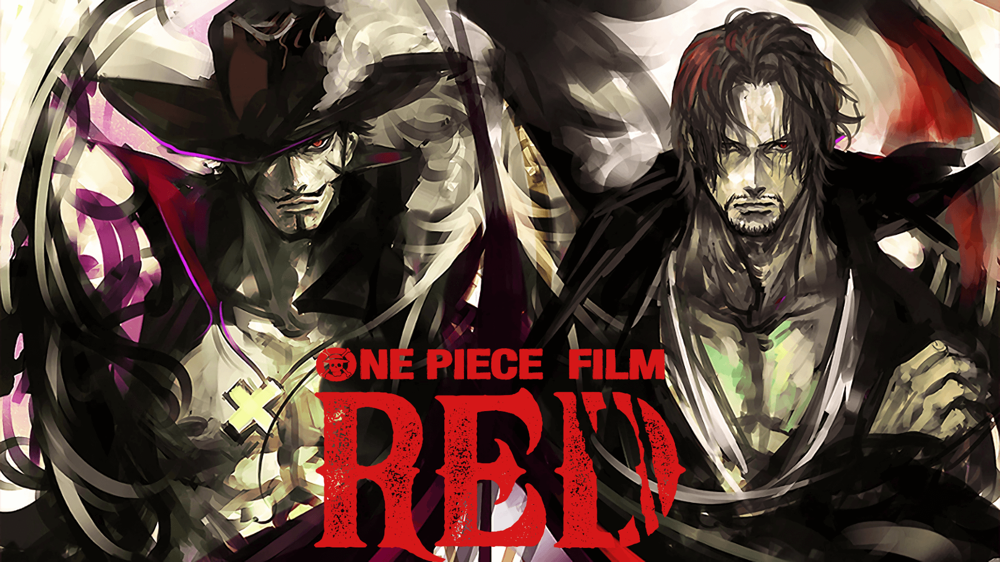

Luffy has gone up against numerous global powers around him, starting with
fighting the most powerful pirates in the East Blue and moving to clashes against the Marines,
Seven Warlords of the Sea, Cipher Pol, World Nobles, and even the Four Emperors of the Grand
Line, emerging victorious in a majority of these battles. He invaded and indirectly caused
the annihilation of Enies Lobby, escaped the impregnable Impel Down, and was a focal figure
in the Summit War of Marineford. He has also either defeated or befriended seven of the eleven
known past or present Warlords prior to the organization's dissolution. Furthermore, Luffy
has invaded the territory of the Four Emperors on multiple occasions, and eventually managed
to defeat one. Luffy's accomplishments and heritage have caused him to be labeled as a
"Dangerous Future Element" while in the process gaining a reputation for being "reckless"
and, in some cases, "insane", earning the wrath of Fleet Admiral Sakazuki, the Marine
Headquarters, and even the World Government.[34]
Luffy also has a penchant for attracting followers and has unwillingly
been named the leader of the Straw Hat Grand Fleet, consisting of seven pirate crews
who swore to come to his aid whenever he wishes. After learning of this and his exploits
against the Big Mom Pirates, the press labeled him the "Fifth Emperor of the Sea", though
many prominent figures initially considered this to be exaggerated.[35] However, after
defeating Kaidou at the end of the Wano Arc, Luffy was officially declared as one of
the Four Emperors by the World Government along with Buggy, replacing Kaidou and Big Mom.[36]
Having had a bounty of Beli.png300,000,000 before he arrived at the
Sabaody Archipelago, Luffy was one of eleven "Super Rookies", pirates who simultaneously
reached the Red Line with bounties of over Beli.png100,000,000 shortly before the Summit War.
[37] He, the other ten Super Rookies, and Marshall D. Teach would go on to be referred to
as the "Worst Generation".[38] Eventually, his conquests and his reputation end up contributing
to his current bounty of Beli.png3,000,000,000.